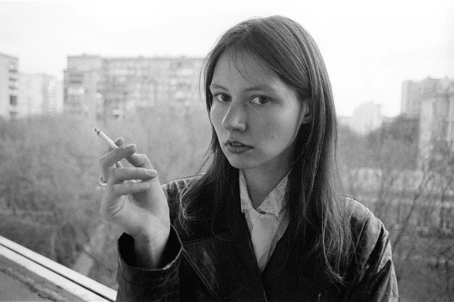

Daria Glishchinskaia
bio, CV

BIO
Daria Glishchinskaia was born in 1998 in Domodedovo. In 2021, she obtained a bachelor’s degree in Art History from RSUH; in 2025, she graduated from the Rodchenko Art School. Now she lives and engages in artistic practices between Moscow, Milan, and Paris. Daria’s main mediums for expression are photography and analog photographic processes. Her practice also includes work with sculpture, installation, and artist’s books.
Daria explores the characteristics of human psychological states at the edge of affect, the interpretation of people’s perception of reality, and the representation of historical and cultural memory.
CV
Solo exhibitions:
Rehearsal
Korney gallery, Moscow
2025
Group exhibitions:
Uncomfortable mirror
Ekaterina Cultural Foundation, Moscow
2025
The village that doesn’t sleep
CCI Fabrika, Moscow
2024
Repetition and Difference. Part 2
Agency. Art Ru, Moscow
2023
Repetition and Difference. Part 1
CCI Fabrika, Moscow
2023
In development
MAMM exhibition hall, Moscow
2023
All I Can Carry
MAMM exhibition hall, Moscow
2023
Photography In Rodchenko Art School
MAMM exhibition hall, Moscow
2023
Please, Don’t Think Too Much
Art-space NII Sreda, Moscow
2022
Awards:
Grant for the project Collection of vulnerable objects by GES-2, the Vaults
The book Shadows is a part of the collection at the Garage Museum.
Other activities:
Pile art fair
2026
Catalog art fair
2026
Rassada market
Museum of Moscow
2024
Catalog art fair
2024
Workshop for Kamchatka children’s camp. Dark room printing, project thinking
2023
Ground zine fest
Ground Solyanka gallery
2023
Lecture «Experimental photographic printing in history of art»
Na Kashirke gallery
2022
WIN-WIN market
Winzavod CCA
2022
Education:
Rodchenko art school, student
2022 - 2025
Bachelor’s degree: history of art (Russian State University for the Humanities)
2017 - 2021